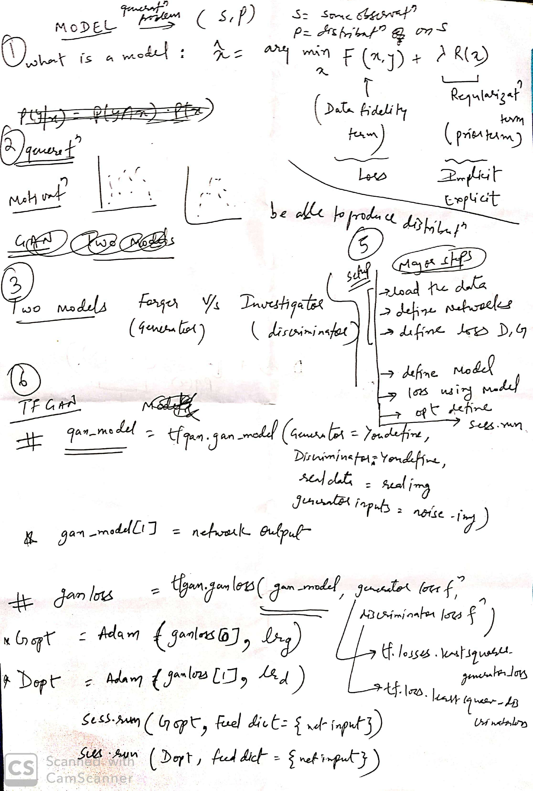

Notes
Home
Linear Algebra and Differential Eq.
Calculus
ManifoldBasics
Numerical Computation 4
Machine learning Basics 5
Inference
Deep Feedfroward networks 6
Regularization 7
Optimization for Deep-models 8
Convolutional Network 9
SpectralClustering
CNN
GAN
Some good links:
Read notes in the order.
Notes
Docs
»
GAN
Some good links:
Intro
Motivation Computerphile
Tutorial
TF-GAN
Read notes in the order.

« Previous